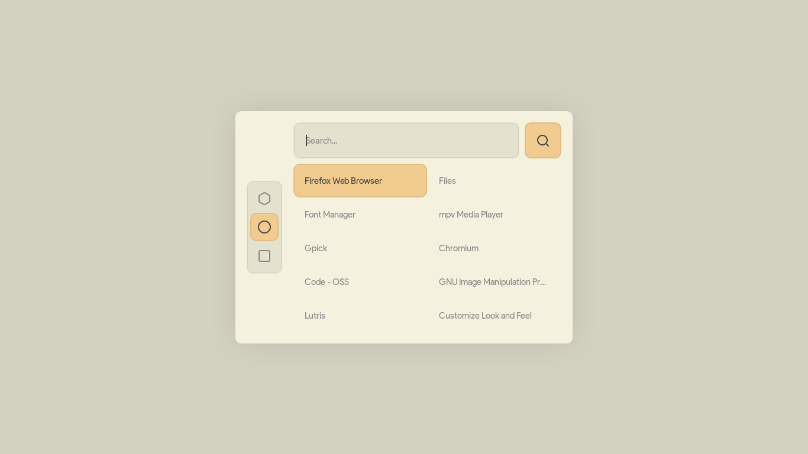

Intro to Getting Started in Cloud -
When it comes to learning all things about the cloud, don't take a linear approach to learning. You probably have a decent understanding of certain topics from classes or personal study, feel free to skip around and focus on the topics you still need to learn. A great way to gauge current understanding is by jumping into practice exams. Even if you're completely new, taking a practice exam will introduce you to keywords, topics, and allow you to familiarize yourself with the exam.
For example, if you want to take the AWS Cloud Practitioner exam, take the official practice test or one from TutorialsDojo.
Beginner Certifications:
- Cloud Practitioner/Azure Fundamentals
- - I’d start with one of these. AWS preferably, since it’s pretty much the industry standard.
- - https://d1.awsstatic.com/training-and-certification/docs-cloud-practitioner/AWS-Certified-Cloud-Practitioner_Exam-Guide.pdf
- - https://tutorialsdojo.com/aws-certified-cloud-practitioner/
- - Don’t be overwhelmed by the sheer number of services, all you need to do is go through the AWS docs and pretty much read the first page of each service mentioned in the exam guide - ex. In AWS S3 Docs, just that first page gives you enough background for the test
Associate Certifications:
- AWS/OCI/Azure/Google
- - Each associate-level has different focuses, each flavor of cloud has its own specialty, from microservice architecture (Google cloud) to databases (OCI). Getting multiple associate-level certs from different cloud providers is a great resume builder, and gives you a great understanding of multi-cloud architectures.
- - 28 - 75 hours of study required
- - 1-2 weeks is possible, but that’s only if you really dedicate yourself, not worth it.
- - There are many different associate-level exams offered by different cloud providers, which means you can tailor your own expertise or career path (no other field does this quite like tech)
- - Aim for a certificate a semester - that way when you hit the job/intern market you already have more experience than 90% of the students in BYU-I
Professional Certifications:
- Professional-level certifications once you find a cloud provider that you are comfortable/confident in
- Requires a in-depth understanding of the entire cloud service library (especially when it comes to AWS)
Resources to use:
- TutorialsDojo - for practice exams
- The rule of thumb is typically aim for 90% on each practice test you take before the actual exam
- ACloudGuru - great courses for each cloud provider, but not really in-depth
- Will get you to pass the test, but not have a good understanding of hands-on
- Learn.cantrill.io - never really used this guy’s stuff, but from what I understand, it’s lab-based, and more hands-on
- r/AWScertifications
- r/AWS
- r/AZURE
- r/googlecloud
- r/homelab
- r/unixporn
- r/sysadmin
- r/networking
Tips:
- IMPORTANT: When you make cloud accounts - SECURE THE HECK out of them. MFA, super long passwords, separate your root account and the account you do labs on, place billing alerts, etc. People WILL try to break into your account and use your account to mine crypto or use resources on your tab. In fact, if you’re not using a password manager like Bitwarden, and MFA security keys like Yubikey, you gotta learn that stuff first.
- Take lots of notes - notes on notes even
- For me personally, I prefer using Obsidian since you can link notes and create a “second brain” of sorts and allows me to go back to old notes and link them to my current understanding
- Practice exams are cheap, real tests are not - even if you pay 20$ for each practice exam, it’s worth it
- OCI is giving away free training and certifications right now - but the OCI platform is really new, and kinda crappy
- Play around with cloud as much as possible - and use the free credits they give you as much as you can
- Build websites, repositories, store images/videos in their storage tiers, etc
- The more you familiarize yourself with the platforms the easier it is to take the exam
- Get used to Linux - if you need a VMware key, the school provides one
- I’d start with either Ubuntu, or Fedora.
- Getting used to Fedora can eventually lead to you getting the RHCSA, which is the mother of all Linux certs.
- You can optionally just skip straight to RHEL, which is an enterprise linux used in cloud, and on-prem. But you have to register with Red Hat to get a free developer key.
- Don’t be afraid to break your machines, that’s half the fun in learning Linux
- Once you pass an exam, they give you 50% off the next one - making it really affordable (at least since the last time I took AWS exams)
Overall, all this might seem overwhelming at first. But get started by doing small things at first and gaining background knowledge. It’s important to remember Gall’s Law: “A complex system that works is invariably found to have evolved from a simple system that worked.” Learning about cloud architecture and systems starts with the simple stuff, and you build on more and more complexity the more experience you get.
Questions
Why will people come to your site?
I believe that people will come to my site for insight about getting started with cloud certifications. I want to be able to give as much information, and as many tips as possible. That way beginners will be able understand cloud certifications better. Additionally, when it comes to cloud, I want to be able to show off certain projects I've done and how I accomplished them. While I'm still unsure about the photography page, I want to be sure that I can post about my personal projects and make a blog that makes it easy for beginners to start off with learning all things cloud!
Linux: Ricing Made Simple
Linux Ricing is when you change certain aspects of the linux desktop experience to your liking. Getting started with Ricing can help you learn the basics about linux desktop environments, how to use them effectively, and be able to change them to your liking.
>Desktop Environments
The first step of ricing is picking your desktop environment, choosing wisely is important, as the desktop environment can make a huge impact on the type of changes that you're able to make on your system. Typically, I prefer the GNOME desktop environment since it's a very customizable, and easy to use desktop. However, there are many different choices including, XFCE, KDE Plasma, LXDE, LXQT, Budgie, and others. It's also important to point out that you can change desktop environments whenever you want, to either experiment or play around with later.
Program Launchers, Terminal Emulators, & Shells
After choosing your desktop environment, you'll want to add features to your desktop and system that will provide value and enhance your workflow. The best way to achieve this, is through program launchers like Rofi, terminal emulators like Kitty, and extensions like those found through Gnome Extensions to add desktop elements. There are many different options out there, and the best advice I can give is to simply try and experiment with the countless extensions and applications out there until you find the best one to fit your needs.
Themes
Once you get to the point of figuring out your workflow, and the applications that fit your needs, you'll want to find a theme that fits your tastes. Once of the best places to find themes or ideas to create your own themes is through either Gnome Look or r/unixporn. For example, in the image, the theme used is a GTK3 flat remix teal dark solid.